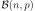

StandardDistributionPolynomialFactory¶
-
class
StandardDistributionPolynomialFactory(*args)¶ Build orthonormal or orthogonal univariate polynomial families.
Parameters: arg :
DistributionorOrthonormalizationAlgorithmEither a
Distributionimplementing the probability measure according to which the polynomial family is orthonormal or anOrthonormalizationAlgorithm.In the first case, the implementation will switch to the suitable specific orthonormal univariate polynomial family if any (see the notes below), or it will default to the
AdaptiveStieltjesAlgorithmto build an orthonormal univariate polynomial family.Notes
Use this functionality with caution:
- The polynomials exist if and only if the distribution admits finite moments of all orders. Even if some algorithms manage to compute something, it will be plain numerical noise.
- Even if the polynomials exist, they form an Hilbertian basis wrt the
dot product induced by the distribution if and only if the distribution is
determinate, ie is characterized by its moments. For example, the
LogNormaldistribution has orthonormal polynomials of arbitrary degree but the projection onto the functional space generated by these polynomials (seeFunctionalChaosAlgorithm) may converge to a function that differs significantly from the function being projected.
OpenTURNS implements the following specific orthonormal [1] univariate polynomial families together with their associated standard distributions:
Standard distribution Polynomial NormalHermiteFactoryUniformLegendreFactoryGammaLaguerreFactoryBetaJacobiFactoryPoissonCharlierFactoryBinomialKrawtchoukFactoryNegativeBinomialMeixnerFactoryAside, OpenTURNS also implements generic algorithms for building orthonormal univariate polynomial families with respect to any arbitrary probability measure (implemented as a
Distribution). OpenTURNS implements the followingOrthonormalizationAlgorithm‘s:[1] A polynomial family is said to be orthonormal with respect to the probability measure if and only if:
where
 denotes Kronecker’s delta.
denotes Kronecker’s delta.Examples
>>> import openturns as ot
Build the specific orthonormal polynomial factory associated to the normal distribution (Hermite):
>>> polynomial_factory = ot.StandardDistributionPolynomialFactory(ot.Normal()) >>> for i in range(3): ... print(polynomial_factory.build(i)) 1 X -0.707107 + 0.707107 * X^2
Build an orthonormal polynomial factory for the Weibull distribution with the default orthonormalization algorithm:
>>> polynomial_factory = ot.StandardDistributionPolynomialFactory(ot.Weibull()) >>> for i in range(3): ... print(polynomial_factory.build(i)) 1 -1 + X 1 - 2 * X + 0.5 * X^2
Build an orthonormal polynomial factory for the log-normal distribution with Chebychev’s othonormalization algorithm:
>>> algorithm = ot.ChebychevAlgorithm(ot.Weibull()) >>> polynomial_factory = ot.StandardDistributionPolynomialFactory(algorithm) >>> for i in range(3): ... print(polynomial_factory.build(i)) 1 -1 + X 1 - 2 * X + 0.5 * X^2
Methods
build(degree)Build the  -th order orthogonal univariate polynomial.
-th order orthogonal univariate polynomial.buildCoefficients(degree)Build the -th order orthogonal univariate polynomial coefficients.buildRecurrenceCoefficientsCollection(degree)Build the recurrence coefficients. getClassName()Accessor to the object’s name. getId()Accessor to the object’s id. getMeasure()Accessor to the associated probability measure. getName()Accessor to the object’s name. getNodesAndWeights(n)Build the -th order quadrature scheme.getRecurrenceCoefficients(n)Accessor to the recurrence coefficients of the -th order.getRoots(n)Accessor to the recurrence coefficients of the -th order.getShadowedId()Accessor to the object’s shadowed id. getVisibility()Accessor to the object’s visibility state. hasName()Test if the object is named. hasVisibleName()Test if the object has a distinguishable name. setName(name)Accessor to the object’s name. setShadowedId(id)Accessor to the object’s shadowed id. setVisibility(visible)Accessor to the object’s visibility state. -
__init__(*args)¶
-
build(degree)¶ Build the
-th order orthogonal univariate polynomial.Parameters: k : int,
Polynomial order.
Returns: polynomial :
OrthogonalUniVariatePolynomialRequested orthogonal univariate polynomial.
Examples
>>> import openturns as ot >>> polynomial_factory = ot.HermiteFactory() >>> print(polynomial_factory.build(2)) -0.707107 + 0.707107 * X^2
-
buildCoefficients(degree)¶ Build the
-th order orthogonal univariate polynomial coefficients.Parameters: k : int,
Polynomial order.
Returns: coefficients :
NumericalPointCoefficients of the requested orthogonal univariate polynomial.
Examples
>>> import openturns as ot >>> polynomial_factory = ot.HermiteFactory() >>> print(polynomial_factory.buildCoefficients(2)) [-0.707107,0,0.707107]
-
buildRecurrenceCoefficientsCollection(degree)¶ Build the recurrence coefficients.
Build the recurrence coefficients of the orthogonal univariate polynomial family up to the
-th order.Parameters: k : int,
Polynomial order.
Returns: recurrence_coefficients : list of
NumericalPointAll the tecurrence coefficients up to the requested order.
Examples
>>> import openturns as ot >>> polynomial_factory = ot.HermiteFactory() >>> print(polynomial_factory.buildRecurrenceCoefficientsCollection(2)) [[1,0,0],[0.707107,0,-0.707107]]
-
getClassName()¶ Accessor to the object’s name.
Returns: class_name : str
The object class name (object.__class__.__name__).
-
getId()¶ Accessor to the object’s id.
Returns: id : int
Internal unique identifier.
-
getMeasure()¶ Accessor to the associated probability measure.
Returns: measure :
DistributionThe associated probability measure (according to which the polynomials are orthogonal).
Notes
Two polynomials P and Q are orthogonal with respect to the probability measure if and only if their dot product:
where and .
Examples
>>> import openturns as ot >>> polynomial_factory = ot.HermiteFactory() >>> print(polynomial_factory.getMeasure()) Normal(mu = 0, sigma = 1)
-
getName()¶ Accessor to the object’s name.
Returns: name : str
The name of the object.
-
getNodesAndWeights(n)¶ Build the
-th order quadrature scheme.Associated with the orthogonal univariate polynomials family.
Parameters: k : int,
Polynomial order.
Returns: nodes :
NumericalPointThe nodes of the
-th order quadrature scheme.weights :
NumericalPointThe weights of the
-th order quadrature scheme.Examples
>>> import openturns as ot >>> polynomial_factory = ot.HermiteFactory() >>> nodes, weights = polynomial_factory.getNodesAndWeights(3) >>> print(nodes) [-1.73205,...,1.73205] >>> print(weights) [0.166667,0.666667,0.166667]
-
getRecurrenceCoefficients(n)¶ Accessor to the recurrence coefficients of the
-th order.Of the orthogonal univariate polynomial.
Parameters: k : int,
Polynomial order.
Returns: recurrence_coefficients :
NumericalPointThe recurrence coefficients of the
-th order orthogonal
univariate polynomial.Notes
Any sequence of orthogonal polynomials has a recurrence formula relating any three consecutive polynomials as follows:
Examples
>>> import openturns as ot >>> polynomial_factory = ot.HermiteFactory() >>> print(polynomial_factory.getRecurrenceCoefficients(3)) [0.5,0,-0.866025]
-
getRoots(n)¶ Accessor to the recurrence coefficients of the
-th order.Of the orthogonal univariate polynomial.
Parameters: k : int,
Polynomial order.
Returns: roots :
NumericalPointThe roots of the
-th order orthogonal univariate polynomial.Examples
>>> import openturns as ot >>> polynomial_factory = ot.HermiteFactory() >>> print(polynomial_factory.getRoots(3)) [-1.73205,...,1.73205]
-
getShadowedId()¶ Accessor to the object’s shadowed id.
Returns: id : int
Internal unique identifier.
-
getVisibility()¶ Accessor to the object’s visibility state.
Returns: visible : bool
Visibility flag.
-
hasName()¶ Test if the object is named.
Returns: hasName : bool
True if the name is not empty.
-
hasVisibleName()¶ Test if the object has a distinguishable name.
Returns: hasVisibleName : bool
True if the name is not empty and not the default one.
-
setName(name)¶ Accessor to the object’s name.
Parameters: name : str
The name of the object.
-
setShadowedId(id)¶ Accessor to the object’s shadowed id.
Parameters: id : int
Internal unique identifier.
-
setVisibility(visible)¶ Accessor to the object’s visibility state.
Parameters: visible : bool
Visibility flag.